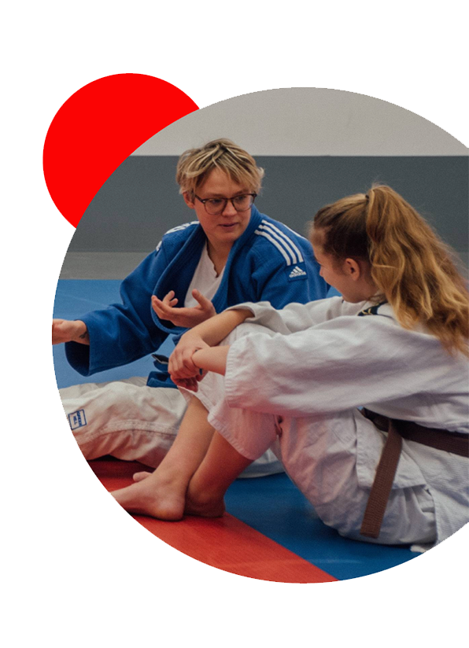
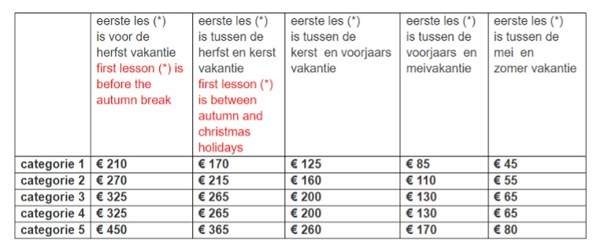

Wij raden het zeker aan om voordat je definitief lid word een proefles te volgen om zo zeker te weten dat jij er klaar
voor bent om bij ons te komen sporten.
De Benoordenhoutse Judoschool werkt met een jaar lidmaatschap.
Onder een jaar verstaan we een schooljaar, wat loopt van september t/m juni.
Wie zich inschrijft, gaat een verbintenis aan tot het einde van het (school)jaar.
Na afloop van het jaar, wordt het lidmaatschap automatisch verlengd, tenzij er per email is opgezegd.
Aan het begin van elk schooljaar krijgt iedereen de kans om zelf aan te geven in welke groep(en) hij/zij dat jaar wil
trainen.
Nieuwe leerlingen kunnen zich op elk moment in het jaar (mits er plaats is) aanmelden. Het verschuldigde lesgeld neemt
af, naarmate iemand later in het jaar instroomt. De kosten vindt je verderop op deze pagina.
Tussendoor stoppen om een geldige reden (ziekte, verhuizing etc.) geeft recht op restitutie van een deel van het
lesgeld. Het niet meer op de lessen verschijnen wordt niet als opzegging gezien.
In de maanden juli en augustus is de school gesloten. Er is wekelijks les, behalve in de schoolvakanties en op feestdagen.
Het is altijd mogelijk een gemiste les in te halen, wel even overleggen.

Kosten
De Benoordenhoutse Judoschool werkt met een jaarcontributie.
Een jaar loopt van september t/m juni, over de maanden juli en augustus wordt géén lesgeld gerekend.
Men is lesgeld verschuldigd vanaf de eerste les (*) tot aan de zomervakantie
Voor wie later in het seizoen instroomt, neemt het te betalen bedrag af.
Er zijn verschillende categorieën:
- categorie 1: wie 1 les per week volgt van 30 minuten
- categorie 2: wie 1 les per week volgt van 45 minuten
- categorie 3: wie 1 les per week volgt van 60 minuten
- categorie 4: wie 2 lessen per week volgt in dezelfde sport
- categorie 5: wie 2 of meer sporten beoefent (b.v. judo en karate) of wie 3 of meer lessen per week volgt in dezelfde
sport (vrije training en kata training tellen hierbij niet mee).

(*) eerste les wil zeggen: de eerste officiële les, dus niet de proefles.
(*) first lesson means: the first official lesson, so not the trial lesson.
U dient zelf het verschuldigde bedrag over te maken op rekeningnummer
NL93 INGB 0006 9333 61 ten name van Benoordenhoutse Judoschool, onder vermelding van de naam
van degene voor wie het bedrag wordt overgemaakt.
Er is géén inschrijfgeld.
Na overleg is het ook mogelijk in 3 termijnen te betalen.
Als u in termijnen wilt betalen, hebben wij dat graag contant, voor de volgende data:
15 september; 15 december en 15 maart.